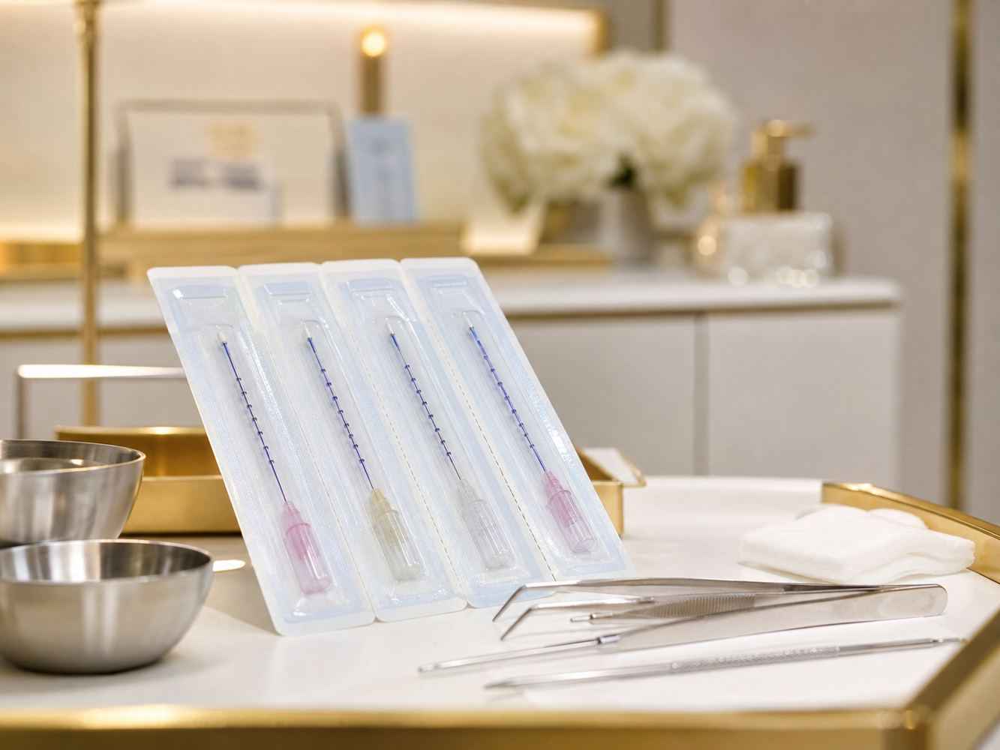

Face Lift
ร้อยไหม MINT
ยกกระชับใบหน้าด้วยไหม PDO เห็นผลตั้งแต่วันที่ทำ
ไหมยกกระชับจาก HansBiomed Corp. (เกาหลีใต้) · เป็นหัตถการที่ทำโดยแพทย์

Overview
ร้อยไหม MINT คืออะไร
MINT ย่อมาจาก Minimally Invasive Nonsurgical Thread คือไหมยกกระชับชนิด PDO (Polydioxanone) ผลิตโดย HansBiomed Corp. ประเทศเกาหลีใต้ เป็นวัสดุสังเคราะห์ที่ร่างกายสลายได้เองตามธรรมชาติ ตัวไหมมีเงี่ยง (barbs) สำหรับเกี่ยวยึดเนื้อเยื่อที่หย่อนคล้อยให้กลับขึ้นไปอยู่ในตำแหน่งที่ต้องการ
จุดเด่นทางเทคนิคคือเงี่ยงผลิตด้วยกรรมวิธี press-molded (ขึ้นรูปด้วยแรงกด) และเรียงตัวแบบ เกลียวรอบเส้น 360 องศา ซึ่งเป็นเทคโนโลยีที่จดสิทธิบัตรไว้ — ต่างจากไหมบางชนิดที่ใช้วิธีตัดเนื้อไหมออกเพื่อทำเงี่ยง
ร้อยไหม MINT เป็นหัตถการที่ทำโดยแพทย์ · ผลลัพธ์ขึ้นอยู่กับแต่ละบุคคล
How It Works
ทำงานอย่างไร — ให้ผล 2 ทางพร้อมกัน
ไหม MINT ทำงานทั้งเชิงกลไกและเชิงชีวภาพในเวลาเดียวกัน
ผลยกทันที (Mechanical Lift)
แพทย์สอดไหมผ่านเข็มนำเข้าใต้ผิว เงี่ยงบนเส้นไหมเกี่ยวยึดเนื้อเยื่อที่หย่อน แล้วดึงกลับขึ้นในทิศทางที่ต้องการ เห็นการยกได้ตั้งแต่วันที่ทำ
ผลกระตุ้นคอลลาเจนระยะยาว (Biostimulation)
เมื่อไหม PDO ค่อย ๆ สลาย ร่างกายตอบสนองด้วยการสร้างคอลลาเจนใหม่รอบแนวไหม ทำให้ผิวบริเวณนั้นแน่นและมีโครงสร้างรองรับดีขึ้น แม้ไหมจะสลายไปแล้วก็ตาม
For You
เหมาะกับใคร
- ผู้ที่ผิวหน้าหย่อนคล้อยชัดเจน จนการทำเครื่องยกกระชับอย่างเดียวอาจไม่เพียงพอ
- ผู้ที่มีแก้มตก ร่องแก้มลึก หรือกรอบหน้าไม่ชัด
- ผู้ที่ต้องการเห็นผลการยกทันที ไม่ต้องการรอให้คอลลาเจนสร้างใหม่หลายเดือน
- ผู้ที่ต้องการปรับรูปหน้าให้เรียวขึ้น ยกมุมปากและแก้ม
- ผู้ที่ยังไม่พร้อมเข้ารับการผ่าตัดดึงหน้า
* ความเหมาะสมและแนวทางการดูแลขึ้นอยู่กับการประเมินของแพทย์เป็นรายบุคคล ควรเข้ารับการประเมินจากแพทย์ก่อนตัดสินใจเข้ารับบริการ
Combination
ใช้ร่วมกับเครื่องยกกระชับ
ร้อยไหม MINT มักใช้ร่วมกับเครื่องยกกระชับ เช่น Ulthera หรือ EMFACE เพื่อให้ได้ทั้งการยกเชิงโครงสร้างจากเส้นไหม และการกระชับผิวจากการกระตุ้นคอลลาเจนด้วยพลังงาน แผนการดูแลที่เหมาะสมกับแต่ละคนแตกต่างกัน แพทย์จะเป็นผู้ประเมินและวางแผนให้
Timeline
ระยะเวลาและผลลัพธ์
- ระยะเวลาทำ — หัตถการใช้เวลาประมาณ 1 ชั่วโมง
- ผลลัพธ์ — เห็นการยกได้ตั้งแต่วันที่ทำ และผลลัพธ์มักเข้าที่ชัดเจนประมาณ 1 เดือนหลังทำ
- ความคงอยู่ — ข้อมูลจากผู้ผลิตระบุว่าผลลัพธ์อยู่ได้ประมาณ 1 ปี
ผลลัพธ์ขึ้นอยู่กับแต่ละบุคคล ขึ้นกับสภาพผิว อายุ ระดับความหย่อนคล้อย และการดูแลตนเองหลังทำ
Recovery & Aftercare
การพักฟื้นและการดูแลตัวเอง
ร้อยไหมเป็นหัตถการที่มีการลงเข็ม จึงมีระยะพักฟื้น ข้อมูลส่วนนี้เราตั้งใจเขียนไว้อย่างตรงไปตรงมา เพื่อให้ผู้เข้ารับบริการเตรียมตัวได้ถูกต้อง
มีระยะพักฟื้น
หลังทำอาจมีอาการบวม ช้ำ หรือรู้สึกตึงรั้งบริเวณที่ร้อยไหมในช่วงแรก ซึ่งเป็นเรื่องปกติของหัตถการนี้
มีข้อควรปฏิบัติหลังทำ
ต้องทำตามคำแนะนำอย่างเคร่งครัด เช่น หลีกเลี่ยงการอ้าปากกว้าง การนวดหน้า และการนอนตะแคง ตามระยะเวลาที่แพทย์กำหนด
แพทย์อธิบายก่อนและหลังทำทุกครั้ง
แพทย์จะอธิบายคำแนะนำการดูแลตัวเองอย่างละเอียดทั้งก่อนและหลังทำทุกครั้ง หากมีข้อสงสัยสามารถสอบถามได้ตลอด
หมายเหตุ: ผลลัพธ์ขึ้นอยู่กับแต่ละบุคคล ข้อมูลบนหน้านี้มีวัตถุประสงค์เพื่อให้ความรู้เบื้องต้นเท่านั้น ไม่ใช่คำวินิจฉัยหรือคำแนะนำทางการแพทย์เฉพาะบุคคล ควรเข้ารับการประเมินจากแพทย์ก่อนตัดสินใจเข้ารับบริการทุกครั้ง
Certification
การรับรอง
ไหม MINT ของ HansBiomed Corp. ได้รับการรับรองจาก US FDA (FDA cleared) ผ่านกระบวนการ 510(k) รวม 3 ฉบับ
| ปี | เลขที่ | ข้อบ่งใช้ |
|---|---|---|
| 2013 | K130191 | การประกบเนื้อเยื่ออ่อน (soft tissue approximation) ในกรณีที่เหมาะกับไหมละลาย |
| 2020 | K192423 | การยกกลางใบหน้า (midface suspension) สำหรับร่องแก้มระดับปานกลาง–รุนแรง |
| 2023 | K220549 | ขยายข้อบ่งใช้ครอบคลุมการยกใบหน้า (ขมับ กลางใบหน้า ใบหน้าส่วนล่าง) |
FAQ
คำถามที่พบบ่อย
More in Face Lift
บริการอื่นในหมวด FACE LIFT
สนใจร้อยไหม MINT? ปรึกษาทีมแพทย์ของเรา
นัดหมายหรือสอบถามข้อมูลบริการ ทีมงานพร้อมดูแลและให้คำปรึกษาแบบเฉพาะบุคคล